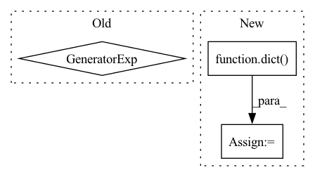

Pattern ID :11582
Before Change
-------
dictionary from tensor name to {size,dtype}
"""
nparts = len(i for i in partitionConfig if isinstance(i, int))
bufferConfigs = {}
ts = dict(zip(partitionConfig["model inputs"], xs))After Change
if not isinstance(xs, tuple):
xs = (xs,)
nparts = len([i for i in partitions_config if isinstance(i, int)])
buffer_configs = dict()
ts = dict(zip(partitions_config["model inputs"], xs))
for n, t in ts.items():
buffer_configs[n] = {"size": t.shape, "dtype": t.dtype}In pattern: SUPERPATTERN
Frequency: 3
Non-data size: 3
Instances Fragment ID: 39261075
Project Name: saareliad/ftpipe
Commit Name: d2bff237eb148389daa8e8d4d6e7f5d0f3c06100
Time: 2019-12-08
Author: alondej@gmail.com
File Name: communication/util.py
M Class Name: AnonimousClass
N Class Name: AnonimousClass
M Method Name: createBufferConfigs(2)
N Method Name: createBufferConfigs(2)
M Parent Class:
N Parent Class:
M File Name: communication/util.py
N File Name: communication/util.py
M Start Line: 47
M End Line: 88
N Start Line: 47
N End Line: 89
Before Change
self.post_pad = nn.ReflectionPad2d(3)
H0, W0 = input_dims[1:]
heights = (2**i for i in range(5,9))
widths = heights
H1, H2, H3, H4 = heights
W1, W2, W3, W4 = widths
After Change
// Layer / normalization options
cnn_kwargs = dict(stride=2, padding=1, output_padding=1)
norm_kwargs = dict(momentum=0.1, affine=True, track_running_stats=True)
activation_d = dict(relu="ReLU", elu="ELU", leaky_relu="LeakyReLU")
self.activation = getattr(nn, activation_d[activation]) // (leaky_relu, relu, elu)
if channel_norm is True:
self.interlayer_norm = normalization.ChannelNorm2D_wrap Fragment ID: 39261072
Project Name: justin-tan/high-fidelity-generative-compression
Commit Name: 610055490ccb1df50737944a01a9af3a016d77ce
Time: 2020-07-30
Author: justan@student.unimelb.edu.au
File Name: models/network.py
M Class Name: Generator
N Class Name: Generator
M Method Name: __init__(7)
N Method Name: __init__(7)
M Parent Class: nn.Module
N Parent Class: nn.Module
M File Name: models/network.py
N File Name: models/network.py
M Start Line: 149
M End Line: 235
N Start Line: 150
N End Line: 237
Before Change
self.asymmetric_pad = nn.ReflectionPad2d((0,1,1,0)) // Slower than tensorflow?
self.post_pad = nn.ReflectionPad2d(1)
heights = (2**i for i in range(4,9)) [::-1]
widths = heights
H1, H2, H3, H4, H5 = heights
W1, W2, W3, W4, W5 = widths After Change
// Layer / normalization options
cnn_kwargs = dict(stride=2, padding=0, padding_mode="reflect")
norm_kwargs = dict(momentum=0.1, affine=True, track_running_stats=True)
activation_d = dict(relu="ReLU", elu="ELU", leaky_relu="LeakyReLU")
self.activation = getattr(nn, activation_d[activation]) // (leaky_relu, relu, elu)
if channel_norm is True:
self.interlayer_norm = normalization.ChannelNorm2D_wrap Fragment ID: 39261070
Project Name: justin-tan/high-fidelity-generative-compression
Commit Name: 610055490ccb1df50737944a01a9af3a016d77ce
Time: 2020-07-30
Author: justan@student.unimelb.edu.au
File Name: models/network.py
M Class Name: Encoder
N Class Name: Encoder
M Method Name: __init__(6)
N Method Name: __init__(6)
M Parent Class: nn.Module
N Parent Class: nn.Module
M File Name: models/network.py
N File Name: models/network.py
M Start Line: 59
M End Line: 122
N Start Line: 65
N End Line: 125